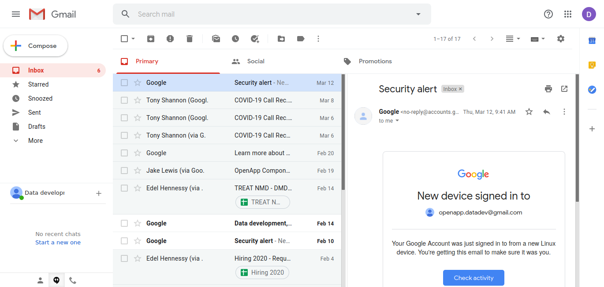
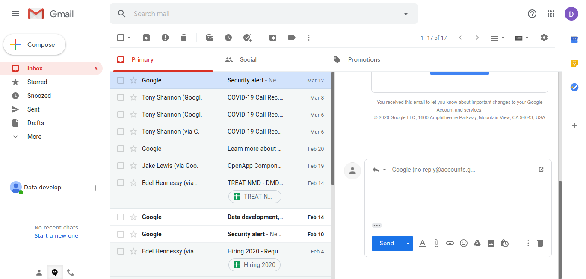
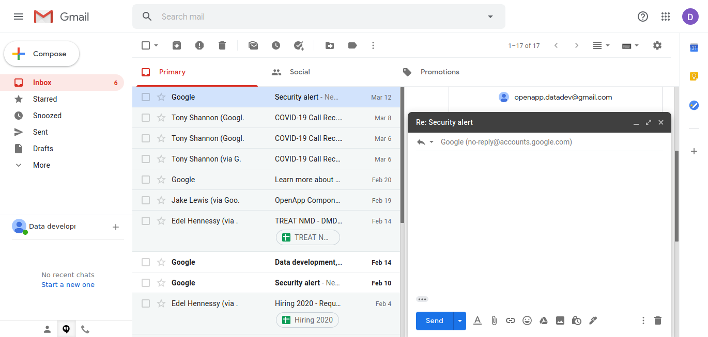
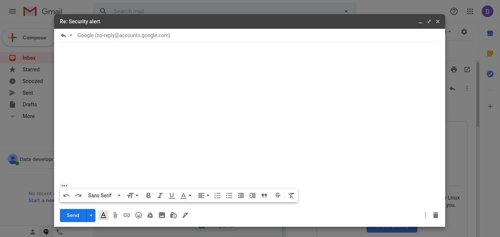
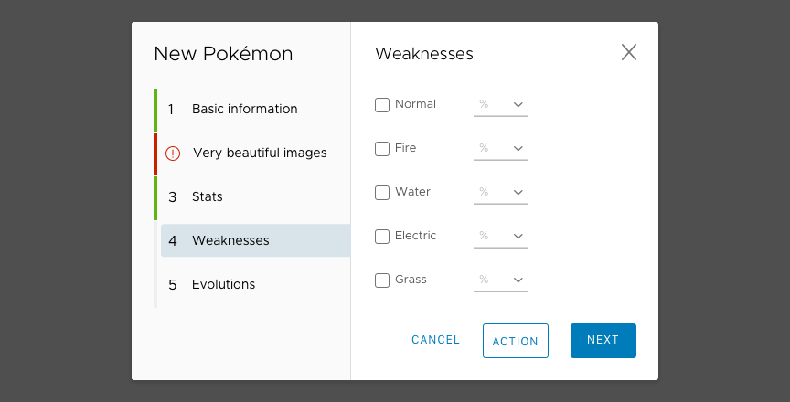

Master / Detail UX Pattern
Master detail
This is widely found (see Gmail below) UI Pattern which can act as a work horse Pattern in our set of solutions
Gmail Master > Detail
Gmail Master > Edit
Gmail Master > Modal
Gmail Large Modal
Master Detail Wizard
The Master - Detail could amended to behave as a Wizard whereby the active row is the active Step of the Wizard.

Master Detail Wizard
The Master - Detail could amended to behave as a Wizard whereby the active row is the active Step of the Wizard.
Master detail on small screens
Without adaption it is inappropriate for use on smaller screens. Modality is useful Pattern to help here.
Material Design example
https://medium.com/@manuel.vonau/what-happened-to-material-designs-beautiful-transitions-a0a10d5f4e54
Microsoft single mode example
This implementation of 2 layer Master > Detail is creating a layer while leaving the main navigation in place. This illustrates that Master > Detail inside a single 'Mode'.

Master / Details as Material
The example below shows the Master / Detail with a Material style treatment. The 'John Doe' detail view isn't strictly a Modal screen - there is no Cancel or Save buttons